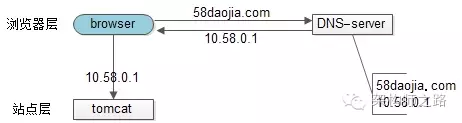
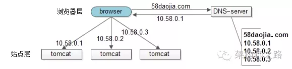
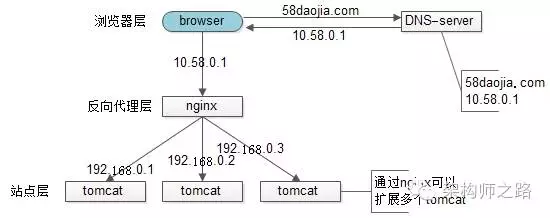
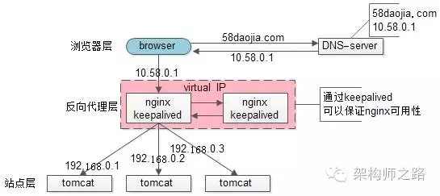
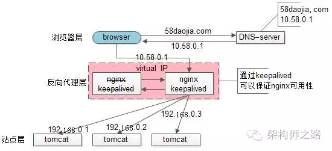
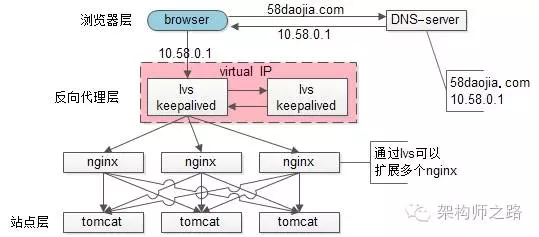
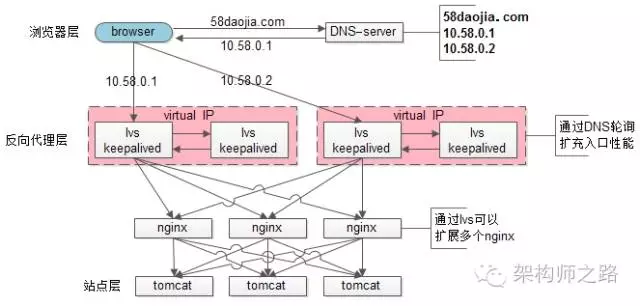

lvs为何不能完全替代DNS轮询
上一篇文章“一分钟了解负载均衡的一切”引起了不少同学的关注，评论中大家争论的比较多的一个技术点是接入层负载均衡技术，部分同学持这样的观点：
1）nginx前端加入lvs和keepalived可以替代“DNS轮询”
2）F5能搞定接入层高可用、扩展性、负载均衡，可以替代“DNS轮询”
“DNS轮询”究竟是不是过时的技术，是不是可以被其他方案替代，接入层架构技术演进，是本文将要细致讨论的内容。
一、问题域
nginx、lvs、keepalived、f5、DNS轮询，每每提到这些技术，往往讨论的是接入层的这样几个问题：
1）可用性：任何一台机器挂了，服务受不受影响
2）扩展性：能否通过增加机器，扩充系统的性能
3）反向代理+负载均衡：请求是否均匀分摊到后端的操作单元执行
二、上面那些名词都是干嘛的
由于每个技术人的背景和知识域不同，上面那些名词缩写（运维的同学再熟悉不过了），还是花1分钟简单说明一下（详细请自行“百度”）：
1）nginx：一个高性能的web-server和实施反向代理的软件
2）lvs：Linux Virtual Server，使用集群技术，实现在linux操作系统层面的一个高性能、高可用、负载均衡服务器
3）keepalived：一款用来检测服务状态存活性的软件，常用来做高可用
4）f5：一个高性能、高可用、负载均衡的硬件设备（听上去和lvs功能差不多？）
5）DNS轮询：通过在DNS-server上对一个域名设置多个ip解析，来扩充web-server性能及实施负载均衡的技术
三、接入层技术演进
【裸奔时代（0）单机架构】

裸奔时代的架构图如上：
1）浏览器通过DNS-server，域名解析到ip
2）浏览器通过ip访问web-server
缺点：
1）非高可用，web-server挂了整个系统就挂了
2）扩展性差，当吞吐量达到web-server上限时，无法扩容
注：单机不涉及负载均衡的问题
【简易扩容方案（1）DNS轮询】
假设tomcat的吞吐量是1000次每秒，当系统总吞吐量达到3000时，如何扩容是首先要解决的问题，DNS轮询是一个很容易想到的方案：
此时的架构图如上：
1）多部署几份web-server，1个tomcat抗1000，部署3个tomcat就能抗3000
2）在DNS-server层面，域名每次解析到不同的ip
优点：
1）零成本：在DNS-server上多配几个ip即可，功能也不收费
2）部署简单：多部署几个web-server即可，原系统架构不需要做任何改造
3）负载均衡：变成了多机，但负载基本是均衡的
缺点：
1）非高可用：DNS-server只负责域名解析ip，这个ip对应的服务是否可用，DNS-server是不保证的，假设有一个web-server挂了，部分服务会受到影响
2）扩容非实时：DNS解析有一个生效周期
3）暴露了太多的外网ip
【简易扩容方案（2）nginx】
tomcat的性能较差，但nginx作为反向代理的性能就强多了，假设线上跑到1w，就比tomcat高了10倍，可以利用这个特性来做扩容：
此时的架构图如上：
1）站点层与浏览器层之间加入了一个反向代理层，利用高性能的nginx来做反向代理
2）nginx将http请求分发给后端多个web-server
优点：
1）DNS-server不需要动
2）负载均衡：通过nginx来保证
3）只暴露一个外网ip，nginx->tomcat之间使用内网访问
4）扩容实时：nginx内部可控，随时增加web-server随时实时扩容
5）能够保证站点层的可用性：任何一台tomcat挂了，nginx可以将流量迁移到其他tomcat
缺点：
1）时延增加+架构更复杂了：中间多加了一个反向代理层
2）反向代理层成了单点，非高可用：tomcat挂了不影响服务，nginx挂了怎么办？
【高可用方案（3）keepalived】
为了解决高可用的问题，keepalived出场了（之前的文章“使用shadow-master保证系统可用性”详细介绍过）：

此时：
1）做两台nginx组成一个集群，分别部署上keepalived，设置成相同的虚IP，保证nginx的高可用
2）当一台nginx挂了，keepalived能够探测到，并将流量自动迁移到另一台nginx上，整个过程对调用方透明

优点：
1）解决了高可用的问题
缺点：
1）资源利用率只有50%
2）nginx仍然是接入单点，如果接入吞吐量超过的nginx的性能上限怎么办，例如qps达到了50000咧？
【scale up扩容方案（4）lvs/f5】
nginx毕竟是软件，性能比tomcat好，但总有个上限，超出了上限，还是扛不住。
lvs就不一样了，它实施在操作系统层面；f5的性能又更好了，它实施在硬件层面；它们性能比nginx好很多，例如每秒可以抗10w，这样可以利用他们来扩容，常见的架构图如下：

此时：
1）如果通过nginx可以扩展多个tomcat一样，可以通过lvs来扩展多个nginx
2）通过keepalived+VIP的方案可以保证可用性
99.9999%的公司到这一步基本就能解决接入层高可用、扩展性、负载均衡的问题。
这就完美了嘛？还有潜在问题么？
好吧，不管是使用lvs还是f5，这些都是scale up的方案，根本上，lvs/f5还是会有性能上限，假设每秒能处理10w的请求，一天也只能处理80亿的请求（10w秒吞吐量*8w秒），那万一系统的日PV超过80亿怎么办呢？（好吧，没几个公司要考虑这个问题）
【scale out扩容方案（5）DNS轮询】
如之前文章所述，水平扩展，才是解决性能问题的根本方案，能够通过加机器扩充性能的方案才具备最好的扩展性。
facebook，google，baidu的PV是不是超过80亿呢，它们的域名只对应一个ip么，终点又是起点，还是得通过DNS轮询来进行扩容：

此时：
1）通过DNS轮询来线性扩展入口lvs层的性能
2）通过keepalived来保证高可用
3）通过lvs来扩展多个nginx
4）通过nginx来做负载均衡，业务七层路由
四、结论
聊了这么多，稍微做一个简要的总结：
1）接入层架构要考虑的问题域为：高可用、扩展性、反向代理+扩展均衡
2）nginx、keepalived、lvs、f5可以很好的解决高可用、扩展性、反向代理+扩展均衡的问题
3）水平扩展scale out是解决扩展性问题的根本方案，DNS轮询是不能完全被nginx/lvs/f5所替代的
末了，上一篇文章有同学留言问58到家采用什么方案，58到家目前部署在阿里云上，前端购买了SLB服务（可以先粗暴的认为是一个lvs+keepalived的高可用负载均衡服务），后端是nginx+tomcat。
五、挖坑
接入层讲了这么多，下一章，准备讲讲服务层“异构服务的负载均”（牛逼的机器应该分配更多的流量，如何做到？）。
希望大家有收获，转发一篇文章只需要3秒钟，求3秒。
==【完】==
回【均衡】一分钟了解负载均衡的一切
回【容量】互联网架构，如何进行容量设计？
回【单点】单点系统架构的可用性与性能优化
回【ID】细聊分布式ID生成方法
【小游戏：回大于10的整数，随机返回好文，猜猜怎么实现的】